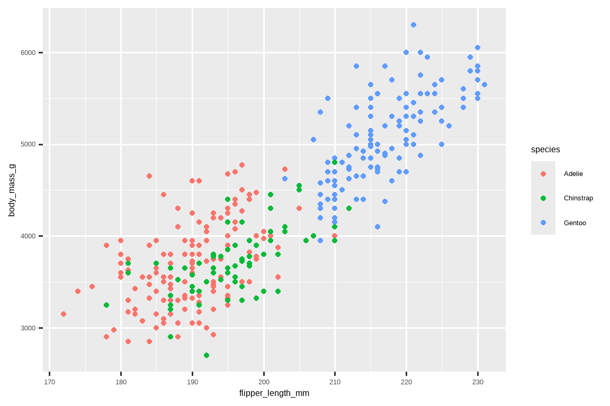
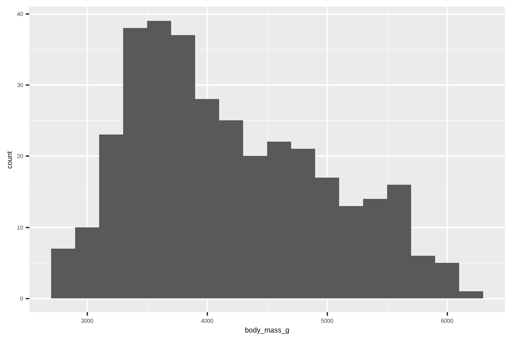
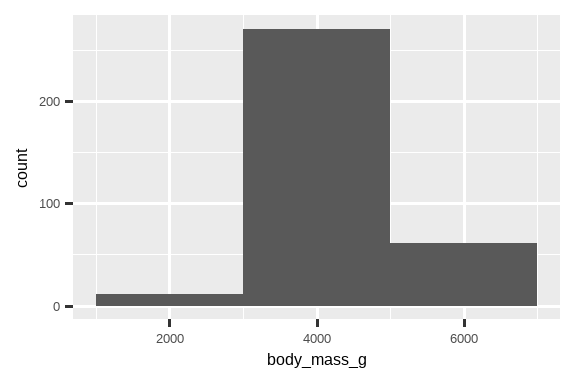
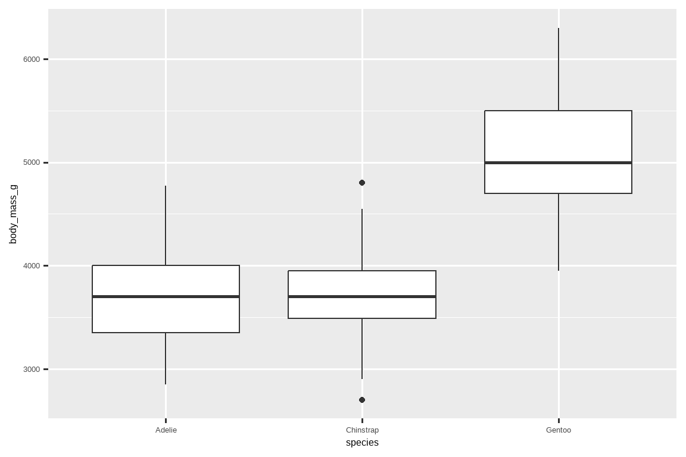
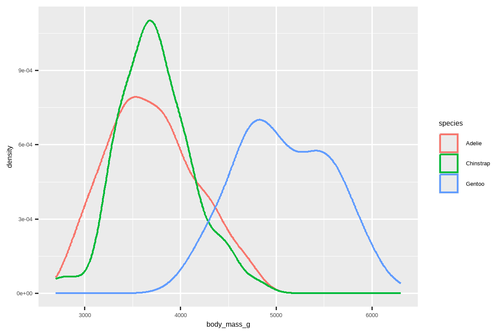
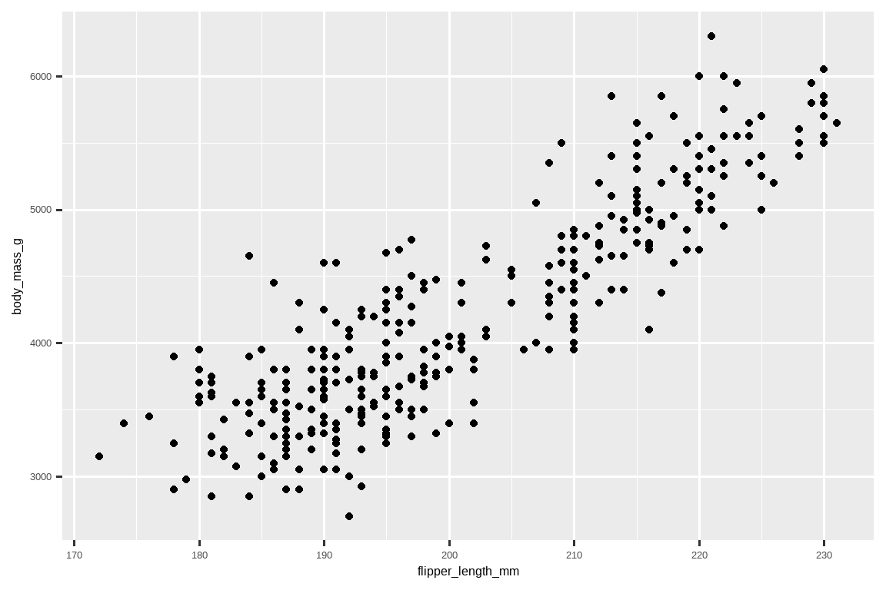
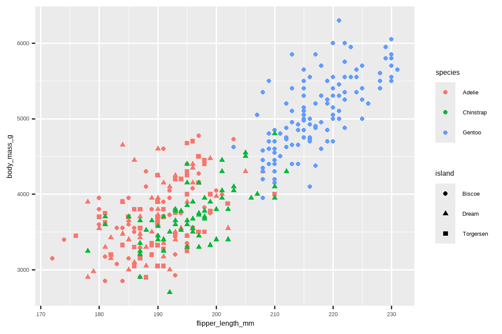
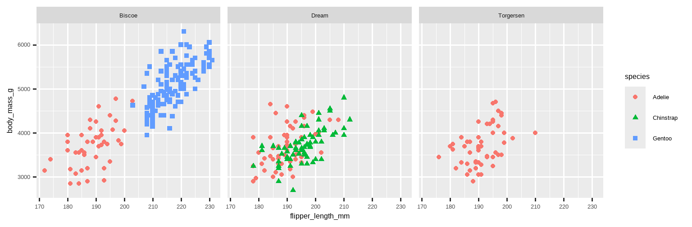

library(tidyverse)
#> ── Attaching core tidyverse packages ───────────────────── tidyverse 2.0.0 ──
#> ✔ dplyr 1.1.4 ✔ readr 2.1.5
#> ✔ forcats 1.0.0 ✔ stringr 1.5.1
#> ✔ ggplot2 3.5.2 ✔ tibble 3.3.0
#> ✔ lubridate 1.9.4 ✔ tidyr 1.3.1
#> ✔ purrr 1.0.4
#> ── Conflicts ─────────────────────────────────────── tidyverse_conflicts() ──
#> ✖ dplyr::filter() masks stats::filter()
#> ✖ dplyr::lag() masks stats::lag()
#> ℹ Use the conflicted package (<http://conflicted.r-lib.org/>) to force all conflicts to become errors1 数据可视化
1.1 引言
“The simple graph has brought more information to the data analyst’s mind than any other device.”
— John Tukey
“简单的图形为数据分析师带来的信息比任何其他设备都多。”
— 约翰·图基
R 有好几个图形系统，但 ggplot2 是其中最优雅、最通用的一个。ggplot2 实现了图形语法 (grammar of graphics)，这是一套用于描述和构建图形的连贯体系。通过学习一个系统并将其应用于许多地方，你可以用 ggplot2 更快地完成更多工作。
本章将教你如何使用 ggplot2 来可视化数据。我们将从创建一个简单的散点图开始，并用它来介绍美学映射 (aesthetic mappings) 和几何对象 (geometric objects)——ggplot2 的基本构建模块。然后，我们将引导你可视化单个变量的分布以及两个或多个变量之间的关系。最后，我们会介绍如何保存你的图形以及一些故障排除技巧。
1.1.1 先决条件
本章重点介绍 ggplot2，它是 tidyverse 中的核心包之一。要访问本章中使用的数据集、帮助页面和函数，请通过运行以下代码加载 tidyverse：
这一行代码加载了 tidyverse 的核心包；这些包几乎在每次数据分析中都会用到。它还会告诉你 tidyverse 中的哪些函数与 R 基础包 (base R)（或其他你可能已加载的包）中的函数存在冲突1。
如果你运行此代码并收到错误消息 there is no package called 'tidyverse'，你需要先安装它，然后再运行一次 library()。
install.packages("tidyverse")
library(tidyverse)你只需要安装一次包，但每次启动新会话时都需要加载它。
除了 tidyverse，我们还将使用 palmerpenguins 包，其中包含 penguins 数据集，该数据集包含了帕尔默群岛 (Palmer Archipelago) 上三个岛屿的企鹅身体测量数据，以及 ggthemes 包，它提供了一个色盲安全的调色板。
library(palmerpenguins)
#>
#> 载入程序包：'palmerpenguins'
#> The following objects are masked from 'package:datasets':
#>
#> penguins, penguins_raw
library(ggthemes)1.2 初步探索
鳍状肢 (flipper) 较长的企鹅比鳍状肢较短的企鹅重还是轻？你可能已经有了答案，但请尝试让你的答案更精确。鳍状肢长度和体重之间的关系是怎样的？是正相关？负相关？线性的？非线性的？这种关系是否因企鹅的物种而异？又是否因企鹅居住的岛屿而异？让我们创建一些可视化图形来回答这些问题。
1.2.1 penguins 数据框
你可以使用 palmerpenguins 包中的 penguins 数据框 (data frame)（也写作 palmerpenguins::penguins）来检验你对这些问题的答案。数据框是变量（在列中）和观测（在行中）的矩形集合。penguins 包含了由 Kristen Gorman 博士和帕尔默站，南极 LTER 收集并提供的 344 个观测值2。
为了让讨论更容易，我们来定义一些术语：
变量 (variable) 是你可以测量的数量、质量或属性。
值 (value) 是你在测量时变量的状态。变量的值可能在每次测量中发生变化。
观测 (observation) 是在相似条件下进行的一组测量（通常你会在同一时间对同一对象进行一次观测中的所有测量）。一个观测会包含多个值，每个值都与一个不同的变量相关联。我们有时会将一个观测称为一个数据点。
表格数据 (tabular data) 是一组值，每个值都与一个变量和一个观测相关联。如果每个值都放在自己的“单元格”中，每个变量都在自己的列中，每个观测都在自己的行中，那么表格数据就是整洁 (tidy) 的。
在此背景下，一个变量指的是所有企鹅的一个属性，而一个观测指的是一只企鹅的所有属性。
在控制台中输入数据框的名称，R 将打印其内容的预览。注意，此预览的顶部写着 tibble。在 tidyverse 中，我们使用一种特殊的数据框，称为 tibble，你很快就会学到更多关于它的知识。
penguins
#> # A tibble: 344 × 8
#> species island bill_length_mm bill_depth_mm flipper_length_mm
#> <fct> <fct> <dbl> <dbl> <int>
#> 1 Adelie Torgersen 39.1 18.7 181
#> 2 Adelie Torgersen 39.5 17.4 186
#> 3 Adelie Torgersen 40.3 18 195
#> 4 Adelie Torgersen NA NA NA
#> 5 Adelie Torgersen 36.7 19.3 193
#> 6 Adelie Torgersen 39.3 20.6 190
#> # ℹ 338 more rows
#> # ℹ 3 more variables: body_mass_g <int>, sex <fct>, year <int>这个数据框包含 8 列。要获得另一种视图，在那里你可以看到所有变量以及每个变量的前几个观测值，请使用 glimpse()。或者，如果你在 RStudio 中，运行 View(penguins) 来打开一个交互式数据查看器。
glimpse(penguins)
#> Rows: 344
#> Columns: 8
#> $ species <fct> Adelie, Adelie, Adelie, Adelie, Adelie, Adelie, A…
#> $ island <fct> Torgersen, Torgersen, Torgersen, Torgersen, Torge…
#> $ bill_length_mm <dbl> 39.1, 39.5, 40.3, NA, 36.7, 39.3, 38.9, 39.2, 34.…
#> $ bill_depth_mm <dbl> 18.7, 17.4, 18.0, NA, 19.3, 20.6, 17.8, 19.6, 18.…
#> $ flipper_length_mm <int> 181, 186, 195, NA, 193, 190, 181, 195, 193, 190, …
#> $ body_mass_g <int> 3750, 3800, 3250, NA, 3450, 3650, 3625, 4675, 347…
#> $ sex <fct> male, female, female, NA, female, male, female, m…
#> $ year <int> 2007, 2007, 2007, 2007, 2007, 2007, 2007, 2007, 2…在 penguins 的变量中包括：
species: 企鹅的物种（阿德利企鹅 (Adelie)、帽带企鹅 (Chinstrap) 或巴布亚企鹅 (Gentoo)）。flipper_length_mm: 企鹅鳍状肢的长度，单位为毫米。body_mass_g: 企鹅的体重，单位为克。
要了解更多关于 penguins 的信息，请运行 ?penguins 打开其帮助页面。
1.2.2 最终目标
我们在本章的最终目标是重新创建以下可视化图形，它展示了这些企鹅的鳍状肢长度和体重之间的关系，同时考虑了企鹅的物种。
1.2.3 创建 ggplot 图形
让我们一步步地重新创建这个图形。
使用 ggplot2 时，你用 ggplot() 函数开始一个图形，定义一个图形对象，然后向其添加图层 (layers)。ggplot() 的第一个参数是要在图形中使用的数据集，因此 ggplot(data = penguins) 创建了一个空的图形，准备好显示 penguins 数据，但由于我们还没有告诉它如何可视化，所以目前它是空的。这不是一个非常激动人心的图形，但你可以把它想象成一块空的画布，你将在上面绘制图形的其余图层。
ggplot(data = penguins)接下来，我们需要告诉 ggplot() 如何将我们数据中的信息进行可视化呈现。ggplot() 函数的 mapping 参数定义了数据集中的变量如何映射到你图形的视觉属性（美学 (aesthetics)）上。mapping 参数总是在 aes() 函数中定义，aes() 的 x 和 y 参数指定了将哪些变量映射到 x 轴和 y 轴。现在，我们只将鳍状肢长度映射到 x 美学，将体重映射到 y 美学。ggplot2 会在 data 参数（在这里是 penguins）中寻找被映射的变量。
下图显示了添加这些映射后的结果。
我们的空画布现在有了更多的结构——很清楚鳍状肢长度将显示在哪里（x 轴上），体重将显示在哪里（y 轴上）。但是企鹅本身还没有在图上。这是因为我们还没有在代码中明确说明如何在图上表示我们数据框中的观测值。
为此，我们需要定义一个几何对象 (geom)：即图形用来表示数据的几何对象。这些几何对象在 ggplot2 中通过以 geom_ 开头的函数提供。人们通常用图形使用的几何对象类型来描述图形。例如，条形图使用条形几何对象 (geom_bar())，折线图使用线形几何对象 (geom_line())，箱线图使用箱线图几何对象 (geom_boxplot())，散点图使用点几何对象 (geom_point()) 等等。
函数 geom_point() 会在图形上添加一个点图层，从而创建一个散点图。ggplot2 带有许多几何对象函数，每个函数都会向图形添加不同类型的图层。在本书中，你将学到很多几何对象，特别是在 Chapter 9 中。
ggplot(
data = penguins,
mapping = aes(x = flipper_length_mm, y = body_mass_g)
) +
geom_point()
#> Warning: Removed 2 rows containing missing values or values outside the scale range
#> (`geom_point()`).
现在我们得到了一个看起来像是我们所认为的“散点图”的东西。它还不完全符合我们的“最终目标”图形，但使用这个图，我们可以开始回答激发我们探索的问题：“鳍状肢长度和体重之间的关系是怎样的？” 这种关系看起来是正相关的（随着鳍状肢长度的增加，体重也随之增加），相当线性的（数据点聚集在一条直线周围而不是一条曲线），并且强度中等（围绕这样一条直线的散布点不多）。鳍状肢较长的企鹅通常体重也较重。
在向此图添加更多图层之前，让我们暂停一下，回顾一下我们收到的警告消息：
Removed 2 rows containing missing values (
geom_point()).
我们看到这条消息是因为我们的数据集中有两只企鹅的体重和/或鳍状肢长度的值是缺失的，而 ggplot2 在没有这两个值的情况下无法在图上表示它们。和 R 一样，ggplot2 遵循的理念是，缺失值永远不应该被悄悄地忽略。这种类型的警告可能是你在处理真实数据时会看到的最常见的警告之一——缺失值是一个非常常见的问题，你将在本书中，特别是在 Chapter 18 中学到更多关于它们的内容。在本章余下的图形中，我们将抑制此警告，这样它就不会在我们制作的每个图形旁边打印出来。
1.2.4 添加美学和图层
散点图对于显示两个数值变量之间的关系很有用，但对两个变量之间的任何明显关系持怀疑态度总是一个好主意，并追问是否存在其他变量可以解释或改变这种明显关系的性质。例如，鳍状肢长度和体重之间的关系是否因物种而异？让我们将物种信息融入到我们的图形中，看看这是否能揭示关于这些变量之间明显关系的任何额外见解。我们将通过用不同颜色的点来代表不同物种来实现这一点。
为了实现这一点，我们需要修改美学还是几何对象？如果你猜的是“在美学映射中，即 aes() 内部”，那么你已经开始掌握用 ggplot2 创建数据可视化的窍门了！如果没猜对，也别担心。在本书中，你将制作更多的 ggplot 图形，并有更多机会在制作它们时检验直觉。
ggplot(
data = penguins,
mapping = aes(x = flipper_length_mm, y = body_mass_g, color = species)
) +
geom_point()
当一个分类变量被映射到一个美学上时，ggplot2 会自动为该变量的每个唯一水平（这里是三个物种中的每一个）分配一个唯一的美学值（这里是一种独特的颜色），这个过程称为标度变换 (scaling)。ggplot2 还会添加一个图例，解释哪个值对应哪个水平。
现在让我们再添加一个图层：一条显示体重和鳍状肢长度之间关系的光滑曲线。在继续之前，请回顾上面的代码，并思考我们如何能将它添加到我们现有的图形中。
由于这是一个代表我们数据的新几何对象，我们将在点几何对象图层之上添加一个新的几何对象图层：geom_smooth()。并且我们将指定我们想要基于一个linear model（线性模型）来绘制最佳拟合线，通过设置 method = "lm"。
ggplot(
data = penguins,
mapping = aes(x = flipper_length_mm, y = body_mass_g, color = species)
) +
geom_point() +
geom_smooth(method = "lm")
我们成功地添加了线条，但这个图看起来不像 Section 1.2.2 中的那个图，后者只有一条针对整个数据集的线，而不是为每个企鹅物种分别画线。
当美学映射在 ggplot() 中定义时，即在全局 (global) 层面，它们会被传递到图形的每个后续几何对象图层中。然而，ggplot2 中的每个几何对象函数也可以接受一个 mapping 参数，这允许在局部 (local) 层面进行美学映射，这些映射会添加到从全局层面继承的映射之上。由于我们希望点的颜色根据物种来定，但又不希望线条也因此分开，我们应该只为 geom_point() 指定 color = species。
ggplot(
data = penguins,
mapping = aes(x = flipper_length_mm, y = body_mass_g)
) +
geom_point(mapping = aes(color = species)) +
geom_smooth(method = "lm")
瞧！我们得到了一个非常像我们最终目标的图形，尽管它还不完美。我们仍然需要为每种企鹅使用不同的形状并改进标签。
通常，仅在图上使用颜色来表示信息不是一个好主意，因为由于色盲或其他色觉差异，人们对颜色的感知是不同的。因此，除了颜色，我们还可以将 species 映射到 shape（形状）美学上。
ggplot(
data = penguins,
mapping = aes(x = flipper_length_mm, y = body_mass_g)
) +
geom_point(mapping = aes(color = species, shape = species)) +
geom_smooth(method = "lm")
注意，图例也会自动更新以反映点的不同形状。
最后，我们可以在一个新的图层中使用 labs() 函数来改进我们图形的标签。labs() 的一些参数可能是不言自明的：title 为图形添加标题，subtitle 添加副标题。其他参数与美学映射相匹配，x 是 x 轴标签，y 是 y 轴标签，color 和 shape 定义了图例的标签。此外，我们可以使用 ggthemes 包中的 scale_color_colorblind() 函数来改进调色板，使其对色盲友好。
ggplot(
data = penguins,
mapping = aes(x = flipper_length_mm, y = body_mass_g)
) +
geom_point(aes(color = species, shape = species)) +
geom_smooth(method = "lm") +
labs(
title = "Body mass and flipper length",
subtitle = "Dimensions for Adelie, Chinstrap, and Gentoo Penguins",
x = "Flipper length (mm)", y = "Body mass (g)",
color = "Species", shape = "Species"
) +
scale_color_colorblind()
我们终于得到了一个与我们的“最终目标”完全匹配的图形！
1.2.5 练习
penguins中有多少行？有多少列？penguins数据框中的bill_depth_mm变量描述了什么？阅读?penguins的帮助文档来找出答案。制作一个
bill_depth_mm与bill_length_mm的散点图。也就是说，制作一个 y 轴为bill_depth_mm，x 轴为bill_length_mm的散点图。描述这两个变量之间的关系。如果你制作一个
species与bill_depth_mm的散点图会发生什么？什么可能是更好的几何对象选择？-
为什么以下代码会产生错误？你将如何修复它？
ggplot(data = penguins) + geom_point() geom_point()中的na.rm参数有什么作用？该参数的默认值是什么？创建一个散点图，在其中成功地将此参数设置为TRUE。为你上一个练习中制作的图形添加以下标题：“Data come from the palmerpenguins package.” 提示：查看
labs()的文档。-
重新创建以下可视化图形。
bill_depth_mm应该映射到哪个美学上？它应该在全局层面还是在几何对象层面进行映射？ -
在脑海中运行这段代码，并预测输出会是什么样子。然后，在 R 中运行代码并检查你的预测。
ggplot( data = penguins, mapping = aes(x = flipper_length_mm, y = body_mass_g, color = island) ) + geom_point() + geom_smooth(se = FALSE) -
这两个图形看起来会有所不同吗？为什么/为什么不？
ggplot( data = penguins, mapping = aes(x = flipper_length_mm, y = body_mass_g) ) + geom_point() + geom_smooth() ggplot() + geom_point( data = penguins, mapping = aes(x = flipper_length_mm, y = body_mass_g) ) + geom_smooth( data = penguins, mapping = aes(x = flipper_length_mm, y = body_mass_g) )
1.3 ggplot2 调用
随着我们从这些介绍性部分继续前进，我们将过渡到更简洁的 ggplot2 代码表达方式。到目前为止，我们一直写得非常明确，这在你学习时很有帮助：
ggplot(
data = penguins,
mapping = aes(x = flipper_length_mm, y = body_mass_g)
) +
geom_point()通常，一个函数的前一两个参数是如此重要，以至于你应该熟记于心。ggplot() 的前两个参数是 data 和 mapping，在本书的其余部分，我们将不再提供这些名称。这样可以节省打字时间，并且通过减少额外的文本量，更容易看出不同图形之间的差异。这是一个非常重要的编程问题，我们将在 Chapter 25 中再次讨论。
更简洁地重写之前的图形代码如下：
ggplot(penguins, aes(x = flipper_length_mm, y = body_mass_g)) +
geom_point()将来，你还会学到管道符号 |>，它将允许你用以下方式创建该图形：
penguins |>
ggplot(aes(x = flipper_length_mm, y = body_mass_g)) +
geom_point()1.4 可视化分布
如何可视化一个变量的分布取决于该变量的类型：分类变量或数值变量。
1.4.1 分类变量
如果一个变量只能取一小组值中的一个，那么它就是分类的 (categorical)。要检查分类变量的分布，你可以使用条形图。条形的高度显示了每个 x 值出现了多少次观测。

对于具有无序水平的分类变量的条形图，比如上面的企鹅 species，通常最好根据它们的频率对条形进行重新排序。这样做需要将变量转换为因子（R 处理分类数据的方式），然后重新排序该因子的水平。
ggplot(penguins, aes(x = fct_infreq(species))) +
geom_bar()
你将在 Chapter 16 中学到更多关于因子以及处理因子的函数（如上面展示的 fct_infreq()）的知识。
1.4.2 数值变量
如果一个变量可以取广泛的数值，并且对这些值进行加、减或求平均是有意义的，那么它就是数值的 (numerical)（或定量的）。数值变量可以是连续的或离散的。
对于连续变量的分布，一种常用的可视化方法是直方图。
ggplot(penguins, aes(x = body_mass_g)) +
geom_histogram(binwidth = 200)
直方图将 x 轴划分为等宽的区间（bins），然后用条形的高度来显示落入每个区间内的观测数量。在上图中，最高的条形显示有 39 个观测的 body_mass_g 值在 3,500 到 3,700 克之间，这是该条形的左右边界。
你可以用 binwidth 参数来设置直方图中区间的宽度，该参数以 x 变量的单位来度量。在使用直方图时，你应该总是探索各种不同的 binwidth，因为不同的 binwidth 可以揭示不同的模式。在下面的图形中，20 的 binwidth 太窄，导致条形过多，难以确定分布的形状。同样，2,000 的 binwidth 太高，导致所有数据只被分到三个条形中，也使其难以确定分布的形状。200 的 binwidth 提供了一个合理的平衡。
ggplot(penguins, aes(x = body_mass_g)) +
geom_histogram(binwidth = 20)
ggplot(penguins, aes(x = body_mass_g)) +
geom_histogram(binwidth = 2000)

数值变量分布的另一种可视化方法是密度图。密度图是直方图的平滑版本，是一个实用的替代方案，特别是对于来自潜在平滑分布的连续数据。我们不会深入探讨 geom_density() 是如何估计密度的（你可以在函数文档中阅读更多相关内容），但让我们用一个类比来解释密度曲线是如何绘制的。想象一个用木块制成的直方图。然后，想象你把一根煮熟的意大利面条扔在上面。面条在木块上形成的形状可以被认为是密度曲线的形状。它比直方图显示的细节少，但可以更容易地快速了解分布的形状，特别是在众数和偏度方面。
ggplot(penguins, aes(x = body_mass_g)) +
geom_density()
#> Warning: Removed 2 rows containing non-finite outside the scale range
#> (`stat_density()`).
1.4.3 练习
制作一个
penguins的species条形图，其中你将species分配给y美学。这个图有什么不同？-
以下两个图有何不同？哪个美学，
color还是fill，对于改变条形的颜色更有用？ geom_histogram()中的bins参数有什么作用？当你加载 tidyverse 包时，
diamonds数据集是可用的，请为其中的carat变量制作一个直方图。尝试不同的组距 (binwidth)。哪个组距揭示了最有趣的模式？
1.5 可视化关系
要可视化一个关系，我们需要至少将两个变量映射到图形的美学上。在接下来的部分中，你将学习用于可视化两个或多个变量之间关系的常用图形以及用于创建它们的几何对象。
1.5.1 一个数值变量和一个分类变量
要可视化数值变量和分类变量之间的关系，我们可以使用并排的箱线图。箱线图 (boxplot) 是一种描述分布位置度量（百分位数）的视觉简写。它对于识别潜在的异常值也很有用。如 Figure 1.1 所示，每个箱线图都包含：
一个箱体，表示数据中间一半的范围，这个距离称为四分位距 (IQR)，从分布的第 25 百分位数延伸到第 75 百分位数。箱体中间有一条线显示中位数，即分布的第 50 百分位数。这三条线让你能感觉到分布的离散程度以及分布是否关于中位数对称或偏向一侧。
一些视觉点，显示那些距离箱体任一边缘超过 1.5 倍 IQR 的观测值。这些离群点是不寻常的，因此被单独绘制出来。
一条从箱体两端延伸出去的线（或须），一直延伸到分布中最远的非离群点。

让我们用 geom_boxplot() 来看一下按物种划分的体重分布：
ggplot(penguins, aes(x = species, y = body_mass_g)) +
geom_boxplot()
或者，我们可以用 geom_density() 制作密度图。
ggplot(penguins, aes(x = body_mass_g, color = species)) +
geom_density(linewidth = 0.75)
我们还使用 linewidth 参数自定义了线条的粗细，以便让它们在背景中更突出一些。
此外，我们可以将 species 映射到 color 和 fill 两种美学上，并使用 alpha 美学为填充的密度曲线添加透明度。这个美学取值在 0（完全透明）和 1（完全不透明）之间。在下面的图中，它被设置为 0.5。
ggplot(penguins, aes(x = body_mass_g, color = species, fill = species)) +
geom_density(alpha = 0.5)
注意我们在这里使用的术语：
- 如果想让某个视觉属性根据某个变量的值而变化，我们就将该变量映射 (map) 到该美学上。
- 否则，我们就设置 (set) 一个美学的值。
1.5.2 两个分类变量
我们可以使用堆叠条形图来可视化两个分类变量之间的关系。例如，以下两个堆叠条形图都显示了 island 和 species 之间的关系，或者具体来说，是可视化每个岛屿内 species 的分布。
第一个图显示了每个岛上每种企鹅的频率。频率图显示，每个岛上的 Adelie 企鹅数量相等。但我们对每个岛屿内的百分比平衡没有很好的感觉。
第二个图是一个相对频率图，通过在几何对象中设置 position = "fill" 创建，它在比较不同岛屿间的物种分布时更有用，因为它不受各岛屿企鹅数量不等的影响。使用这个图我们可以看到，Gentoo 企鹅都生活在 Biscoe 岛，约占该岛企鹅数量的 75%；Chinstrap 企鹅都生活在 Dream 岛，约占该岛企鹅数量的 50%；而 Adelie 企鹅生活在所有三个岛屿上，并且构成了 Torgersen 岛上所有的企鹅。
在创建这些条形图时，我们将要被分成条形的变量映射到 x 美学上，将改变条形内部颜色的变量映射到 fill 美学上。
1.5.3 两个数值变量
到目前为止，你已经学习了用于可视化两个数值变量之间关系的散点图（用 geom_point() 创建）和光滑曲线（用 geom_smooth() 创建）。散点图可能是可视化两个数值变量之间关系最常用的图形。
ggplot(penguins, aes(x = flipper_length_mm, y = body_mass_g)) +
geom_point()
1.5.4 三个或更多变量
正如我们在 Section 1.2.4 中看到的，我们可以通过将更多变量映射到额外的美学上，将它们融入到图形中。例如，在下面的散点图中，点的颜色代表物种，点的形状代表岛屿。
ggplot(penguins, aes(x = flipper_length_mm, y = body_mass_g)) +
geom_point(aes(color = species, shape = island))
然而，向一个图中添加太多的美学映射会使其变得杂乱无章，难以理解。另一种方法，特别是对于分类变量很有用，就是将图分割成分面 (facets)，即每个子图显示数据的一个子集。
要按单个变量对图进行分面，请使用 facet_wrap()。facet_wrap() 的第一个参数是一个公式 (formula)3，你通过 ~ 后跟一个变量名来创建。你传递给 facet_wrap() 的变量应该是分类变量。
ggplot(penguins, aes(x = flipper_length_mm, y = body_mass_g)) +
geom_point(aes(color = species, shape = species)) +
facet_wrap(~island)
你将在 Chapter 9 中学习到许多其他用于可视化变量分布及其之间关系的几何对象。
1.5.5 练习
ggplot2 包中附带的
mpg数据框包含由美国环境保护署收集的 38 种车型的 234 个观测值。mpg中的哪些变量是分类变量？哪些变量是数值变量？（提示：输入?mpg以阅读该数据集的文档。）当你运行mpg时，如何看到这些信息？使用
mpg数据框制作一个hwy与displ的散点图。接下来，将第三个数值变量映射到color，然后是size，然后是color和size，然后是shape。这些美学对于分类变量与数值变量的行为有何不同？在
hwy与displ的散点图中，如果将第三个变量映射到linewidth会发生什么？如果将同一个变量映射到多个美学上会发生什么？
制作一个
bill_depth_mm与bill_length_mm的散点图，并按species为点着色。按物种着色揭示了这两个变量之间关系的哪些信息？按species进行分面呢？-
为什么以下代码会产生两个独立的图例？你将如何修复它以合并这两个图例？
ggplot( data = penguins, mapping = aes( x = bill_length_mm, y = bill_depth_mm, color = species, shape = species ) ) + geom_point() + labs(color = "Species") -
创建以下两个堆叠条形图。你可以用第一个图回答哪个问题？你可以用第二个图回答哪个问题？
1.6 保存图形
制作完一个图形后，你可能希望将其从 R 中导出，保存为一张图片以便在其他地方使用。这就是 ggsave() 的工作，它会将最近创建的图形保存到磁盘上：
ggplot(penguins, aes(x = flipper_length_mm, y = body_mass_g)) +
geom_point()
ggsave(filename = "penguin-plot.png")这会将你的图形保存到你的工作目录中，这个概念你将在 Chapter 6 中学到更多。
如果你不指定 width 和 height，它们将取自当前绘图设备的尺寸。为了代码的可重现性，你最好指定它们。你可以在文档中了解更多关于 ggsave() 的信息。
然而，通常我们建议你使用 Quarto 来组织你的最终报告，它是一个可重现的创作系统，允许你将代码和文字交织在一起，并自动将图形包含在你的报告中。你将在 Chapter 28 中学到更多关于 Quarto 的知识。
1.6.1 练习
-
运行以下代码行。哪一个图被保存为
mpg-plot.png？为什么？ 你需要如何更改上面的代码才能将图保存为 PDF 而不是 PNG？你如何找出
ggsave()支持哪些类型的图像文件？
1.7 常见问题
当你开始运行 R 代码时，你很可能会遇到问题。别担心——这发生在每个人身上。我们都写了很多年的 R 代码，但每天我们仍然会写出第一次尝试时就行不通的代码！
首先，仔细比较你正在运行的代码和书中的代码。R 非常挑剔，一个放错位置的字符都可能造成天壤之别。确保每个 ( 都与一个 ) 匹配，每个 " 都与另一个 " 配对。有时你运行代码后什么也没发生。检查你的控制台左侧：如果它是一个 +，这意味着 R 认为你还没有输入一个完整的表达式，正在等待你完成它。在这种情况下，通常很容易通过按 ESCAPE 键中止当前命令的处理来重新开始。
创建 ggplot2 图形时的一个常见问题是把 + 放在了错误的位置：它必须放在行的末尾，而不是开头。换句话说，确保你没有意外地写出像下面这样的代码：
ggplot(data = mpg)
+geom_point(mapping = aes(x = displ, y = hwy))如果你仍然卡住，可以尝试查看帮助。你可以通过在控制台中运行 ?function_name 来获取任何 R 函数的帮助，或者在 RStudio 中高亮函数名并按 F1。如果帮助看起来不是那么有用，也别担心——直接跳到示例部分，寻找与你想要做的相匹配的代码。
如果那也帮不了你，就仔细阅读错误消息。有时答案就藏在那里！但是当你刚接触 R 时，即使答案在错误消息中，你也可能还不知道如何理解它。另一个很棒的工具是 Google：尝试用谷歌搜索错误消息，因为很可能其他人也遇到过同样的问题，并且在网上得到了帮助。
1.8 小结
在本章中，你学习了用 ggplot2 进行数据可视化的基础知识。我们从支撑 ggplot2 的基本思想开始：可视化是从数据中的变量到诸如位置、颜色、大小和形状等美学属性的映射。然后，你学习了如何逐层增加图形的复杂性并改进其呈现方式。你还学习了用于可视化单个变量分布以及可视化两个或多个变量之间关系的常用图形，方法是利用额外的美学映射和/或使用分面将你的图形拆分为小的倍数图。
在本书中，我们将反复使用可视化，在需要时引入新的技术，并在 Chapter 9 到 Chapter 11 中更深入地探讨用 ggplot2 创建可视化。
掌握了可视化的基础知识后，在下一章中，我们将稍微转换一下思路，给你一些实用的工作流程建议。在本书的这一部分，我们将工作流程建议与数据科学工具穿插在一起，因为这有助于你在编写越来越多的 R 代码时保持条理。
你可以使用 conflicted 包来消除该消息并强制按需解决冲突，当你加载更多包时，这一点变得更加重要。你可以在 https://conflicted.r-lib.org 了解更多关于 conflicted 的信息。↩︎
Horst AM, Hill AP, Gorman KB (2020). palmerpenguins: Palmer Archipelago (Antarctica) penguin data. R package version 0.1.0. https://allisonhorst.github.io/palmerpenguins/. doi: 10.5281/zenodo.3960218.↩︎
这里的“公式”(formula) 是指由
~创建的东西的名称，而不是“方程式”(equation) 的同义词。↩︎